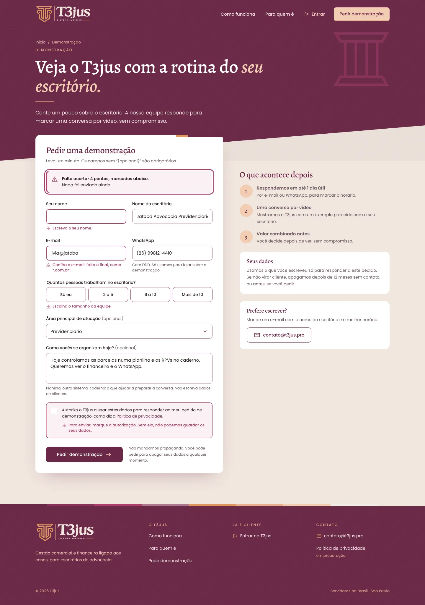
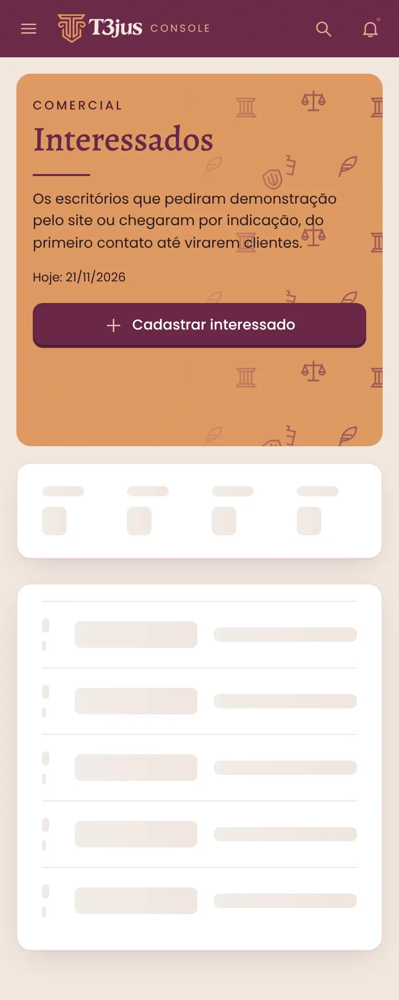
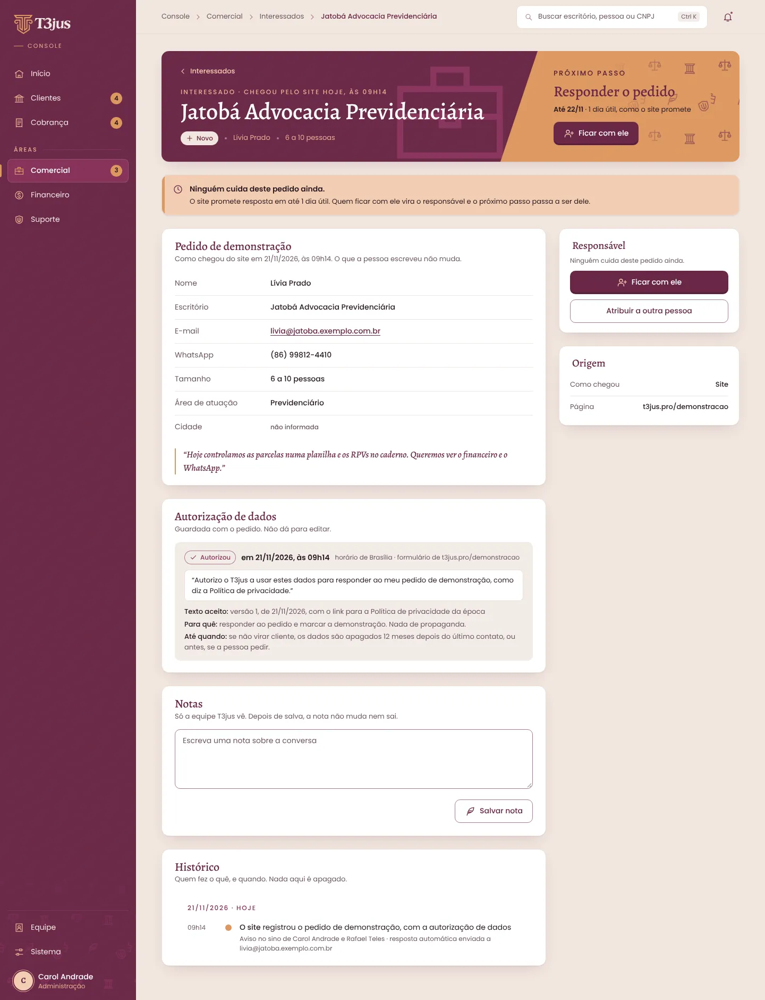
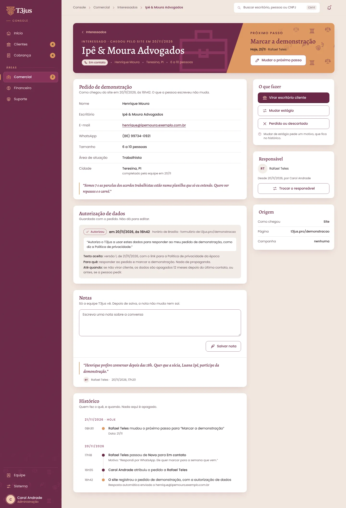
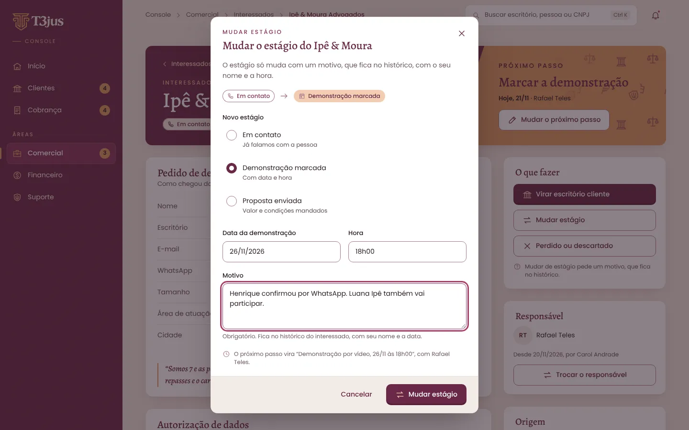
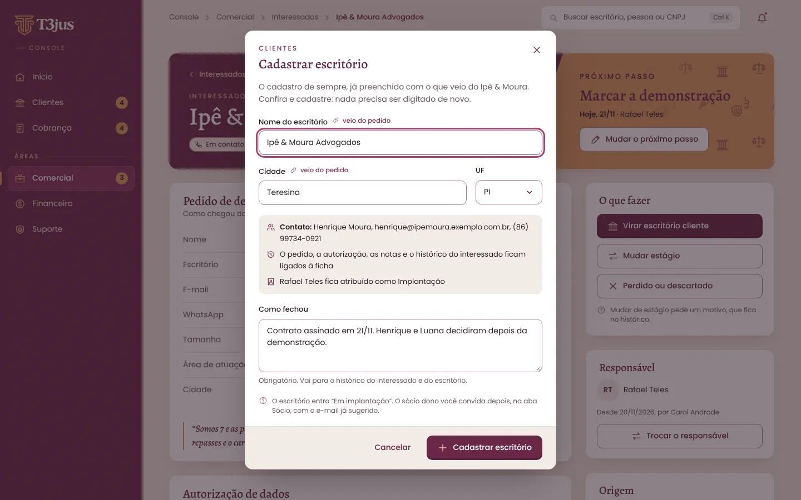
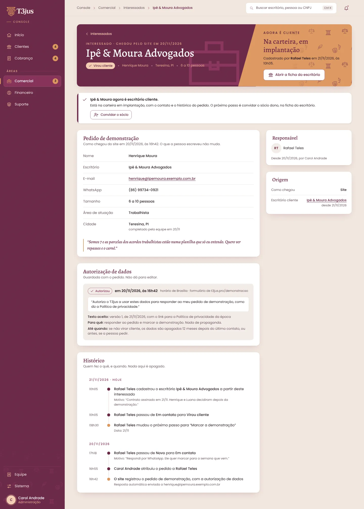
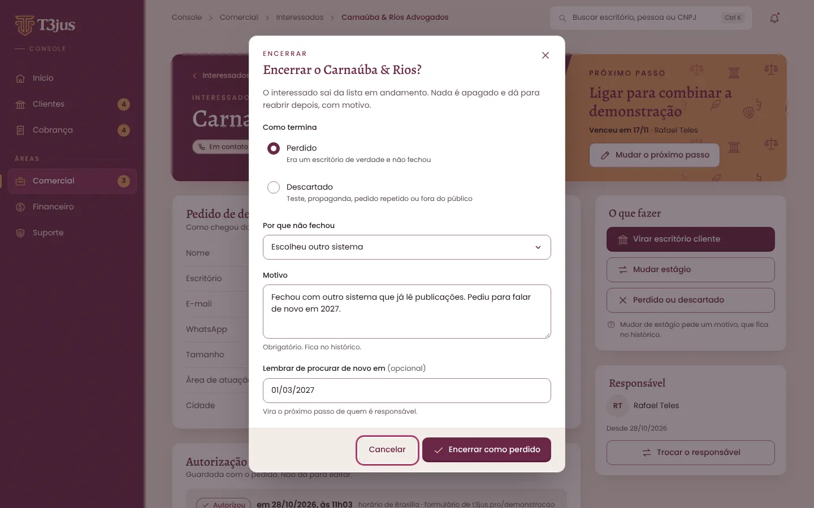
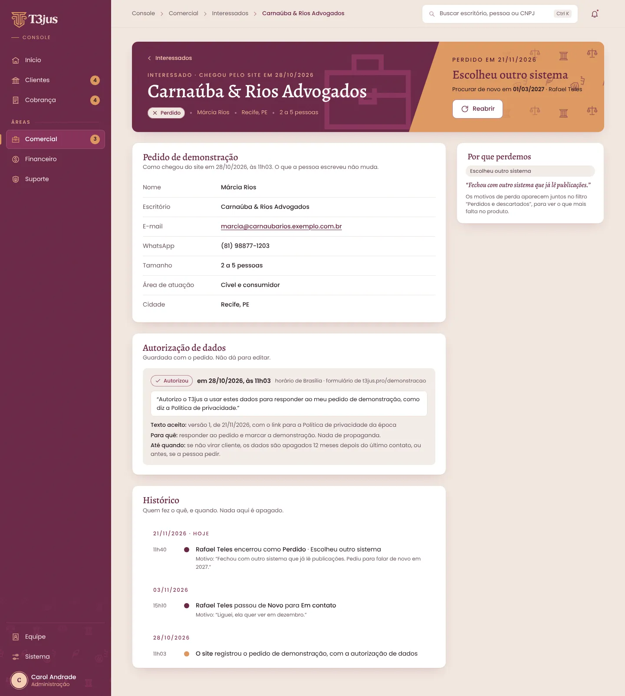
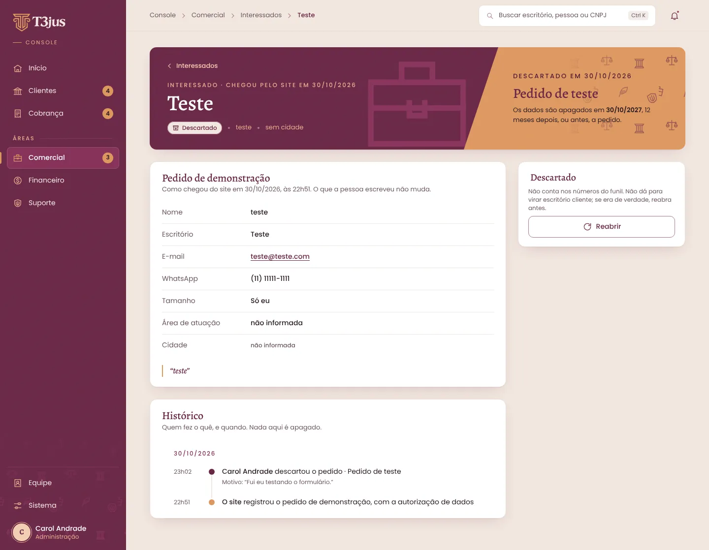

Início
Abertura com o caminho do honorário, o que existe e o que é planejado, dados, valor e chamada para a demonstração.
Abrir o HTML neste estadoDesenho para a Carol aprovar antes do código: o site em t3jus.pro (F2.1), o pedido de demonstração (F2.2) e a área Interessados do Console (F2.3). Dados fictícios. Clique numa imagem para abrir o HTML naquele estado. Decisões, textos e perguntas estão no NOTAS.md.
Site · Formulário · Console
F2.1 · SC-01, SC-03, SC-06. Quatro páginas: Início, Como funciona, Para quem é e Demonstração. As capturas são da página inteira; role dentro de cada uma.
Abertura com o caminho do honorário, o que existe e o que é planejado, dados, valor e chamada para a demonstração.
Abrir o HTML neste estadoAs seis etapas, cada uma com um exemplo ilustrado e a situação de hoje, e os quatro passos para começar.
Abrir o HTML neste estadoO perfil do escritório, quando faz sentido e quando ainda não, e as perguntas frequentes.
Abrir o HTML neste estadoF2.2 · SC-02. O formulário da página Demonstração e os seus estados.
Formulário e o que acontece depois.
Abrir o HTML neste estadoResumo no topo, erro preso a cada campo; nada foi enviado.
Abrir o HTML neste estado
Botão ocupado, campos travados.
Abrir o HTML neste estadoConfirmação com o resumo e o prazo de resposta.
Abrir o HTML neste estadoO que foi escrito continua; tentar de novo ou e-mail.
Abrir o HTML neste estadoF2.3 · SC-05. A área nova do Console, sobre a moldura aprovada da Cobrança.
Números, filtros e os interessados em andamento.
Abrir o HTML neste estadoCom clientes, perdidos e descartados.
Abrir o HTML neste estadoRafael Teles vê e faz o mesmo que a Administração.
Abrir o HTML neste estadoAntes do primeiro pedido.
Abrir o HTML neste estadoEsqueleto da lista.
Abrir o HTML neste estado
Com código para o suporte.
Abrir o HTML neste estadoBusca por um nome que não existe.
Abrir o HTML neste estadoFinanceiro e Suporte não veem interessados.
Abrir o HTML neste estadoPedido do site de hoje: ficar com ele ou atribuir.
Abrir o HTML neste estado
Pedido como chegou, autorização de dados, notas, histórico e ações.
Abrir o HTML neste estado
Só aparece quem vê Interessados.
Abrir o HTML neste estadoO que, quando e quem.
Abrir o HTML neste estadoCaminho, novo estágio, data da demonstração e motivo obrigatório.
Abrir o HTML neste estado
Erro no padrão do Console v1.
Abrir o HTML neste estadoO cadastro aprovado, já preenchido.
Abrir o HTML neste estado
Agora é cliente, com o atalho para a ficha e o convite do sócio.
Abrir o HTML neste estado
Como termina, por quê, motivo e quando procurar de novo.
Abrir o HTML neste estado
Motivo à vista; reabrir com motivo.
Abrir o HTML neste estado
Fora dos números; data em que os dados são apagados.
Abrir o HTML neste estado